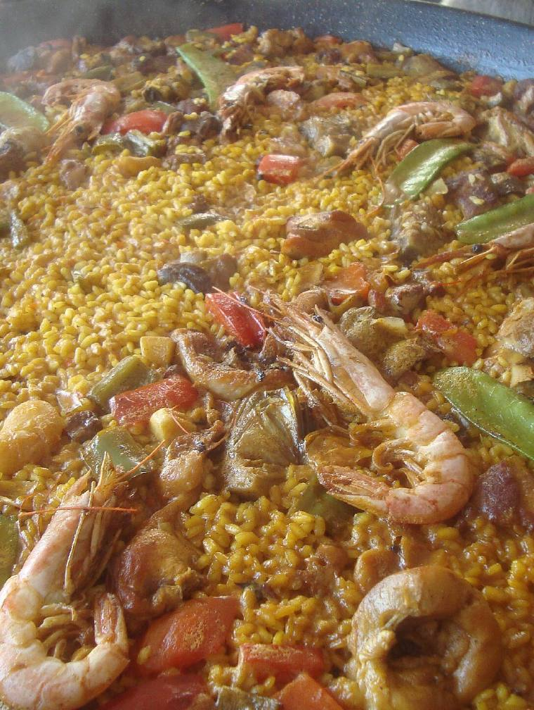

Cuisine espagnole

Cuisine espagnole
Paella mixta
La paella viande et fruits de mer
Préparation : 40 min
Cuisson : 50 min
Ingrédients (pour 6 personnes)
- 500 g de riz rond
- 1 poulet en 16 morceaux
- 500 g de moules
- 250 g de gambas
- 3 petits calamars
- 1 poivron rouge
- 2 gousses d’ail
- 1 l de bouillon de volaille
- 1 cuillère à café de paprika
- 4 cuillères à soupe d’huile d’olive
- safran, persil, citron, sel, poivre
Quantités adaptées. Les temps de cuisson ne sont pas recalculés.
- Bouillir carapaces et têtes de gambas 5 minutes dans le bouillon, filtrer, garder chaud.
- Dorer le poulet bien à cœur dans la paellera, 20 minutes, réserver. Y blondir l’ail, le piler avec sel, safran et paprika.
- Revenir poivron et calamars 3 minutes, ajouter poulet et riz, remuer 1 minute.
- Verser bouillon et pilon, cuire 10 minutes sans remuer.
- Ajouter les moules pour 5 minutes, puis les gambas pour 3 minutes. Jeter les moules fermées.
- Couvrir d’un linge 5 minutes, servir avec persil et citron.
D’après une recette du magazine ¡Hola!. Traduit et reformulé, cuisson du poulet précisée.